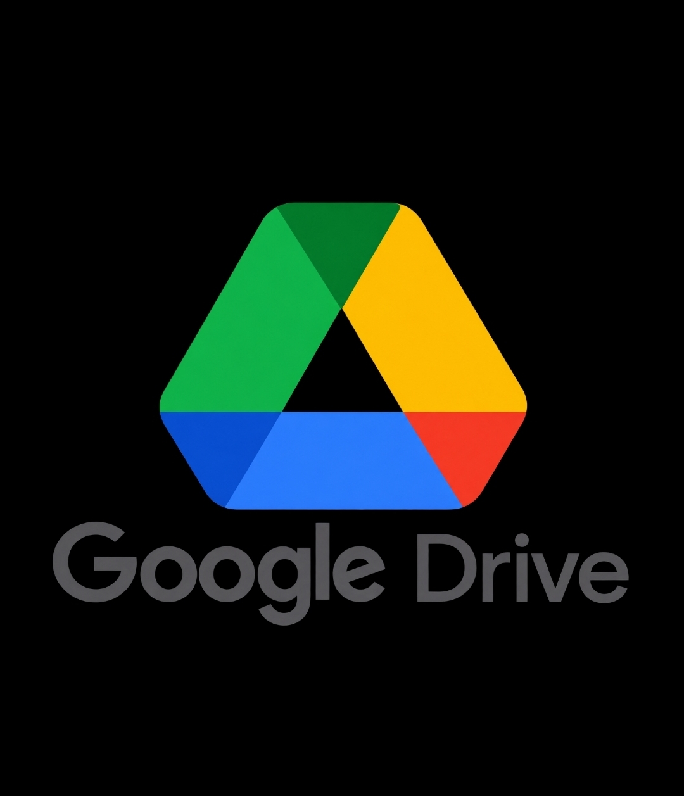

اسم الطالبة: هدير محمد ربيع محمد
الرقم الجامعي: 2501599
أصبح التخزين السحابي من أهم التقنيات الحديثة التي ساعدت على حفظ الملفات والبيانات والوصول إليها من أي مكان وفي أي وقت باستخدام الإنترنت. ويعد تطبيق Google Drive من أشهر تطبيقات التخزين السحابي التي توفر للمستخدمين إمكانية حفظ الملفات ومشاركتها بسهولة.
التخزين السحابي هو خدمة تتيح للمستخدم حفظ الملفات والصور والمستندات على خوادم عبر الإنترنت بدلاً من تخزينها على جهاز الكمبيوتر أو الهاتف فقط. ويساعد ذلك على الوصول إلى البيانات من أجهزة مختلفة.
Google Drive هو أحد خدمات شركة Google، ويتيح للمستخدم تخزين الملفات وتنظيمها ومشاركتها مع الآخرين، كما يمكن استخدامه لإنشاء المستندات وجداول البيانات والعروض التقديمية.

| وجه المقارنة | Google Drive | OneDrive | Dropbox |
|---|---|---|---|
| الشركة | Microsoft | Dropbox | |
| المساحة المجانية | 15 جيجابايت | 5 جيجابايت | 2 جيجابايت |
| مشاركة الملفات | متاحة | متاحة | متاحة |
يساعد التخزين السحابي على توفير الوقت والجهد، وحماية الملفات من الفقدان عند تلف الأجهزة، كما يسهل تبادل المعلومات والعمل الجماعي بين الأفراد والمؤسسات.